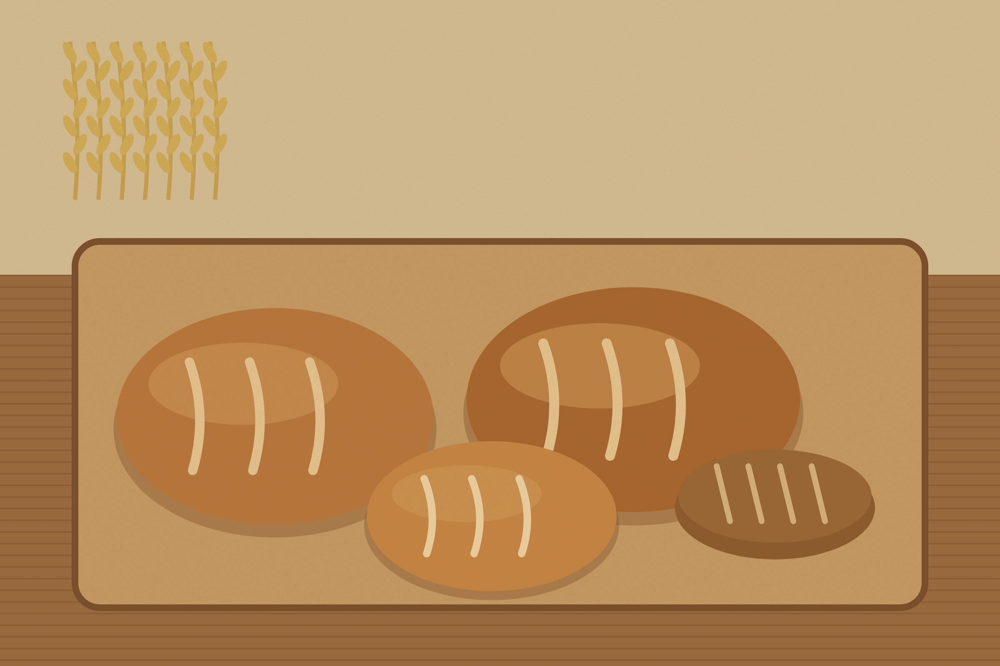
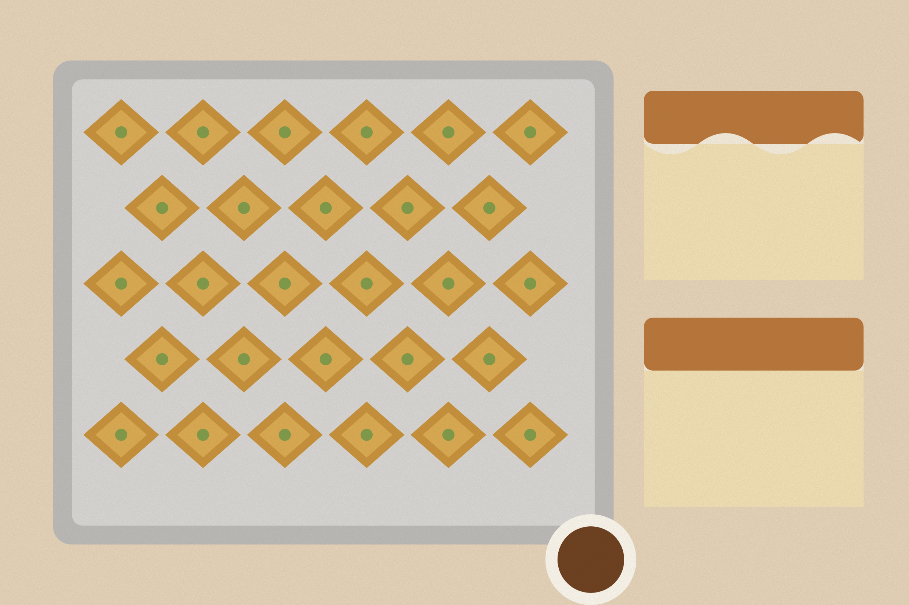
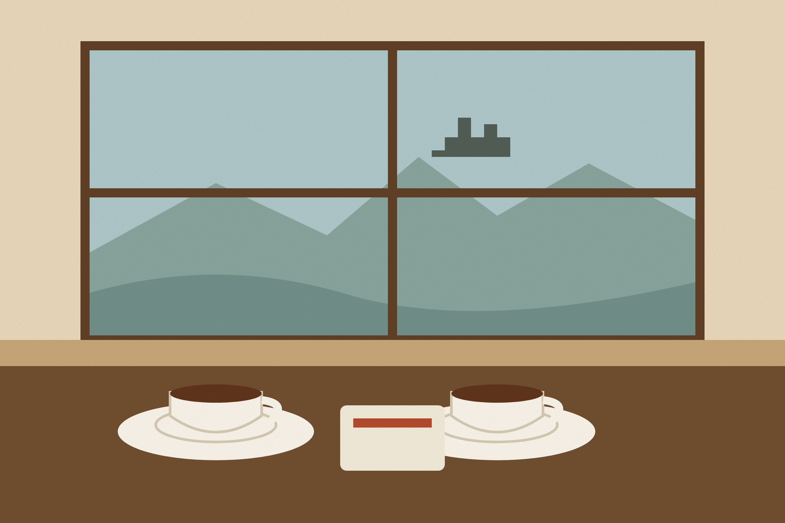

Welcome to Furra Gjoni
  
Warm bread, every morning, a few steps from the lake road.
Furra Gjoni is a family bakery and café in the old centre of Shkodër. We bake in the same wood-fired oven Gjon Gjoni built in 1987, and we open the doors at half past six so the first loaves are still warm when you walk in.
Out of the oven today
See the full menu »
|
OPENING HOURS
Monday to Friday
06:30 - 20:00
Saturday
07:00 - 21:00
Sunday
08:00 - 14:00
FIND US
Rruga Kolë Idromeno 14
4001 Shkodër
ORDER BY PHONE
+355 22 000 000
NEW! Cakes and trays for the next morning, order before 18:00.
|